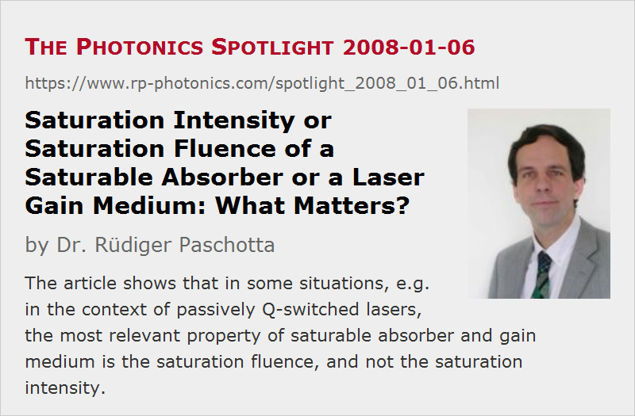

Saturation Intensity or Saturation Fluence of a Saturable Absorber or a Laser Gain Medium: What Matters?
Posted on 2008-01-06 as a part of the Photonics Spotlight (available as e-mail newsletter!)
Permanent link: https://www.rp-photonics.com/spotlight_2008_01_06.html
Author: Dr. Rüdiger Paschotta, RP Photonics Consulting GmbH
Abstract: The article shows that in some situations, e.g. in the context of passively Q-switched lasers, the most relevant property of saturable absorber and gain medium is the saturation fluence, and not the saturation intensity.

Ref.: encyclopedia articles on saturable absorbers, saturation power, saturation energy
It is often said that a saturable absorber for passive Q switching of a laser must have a small saturation intensity, so that it can be quickly saturated when the pulse builds up. However, in most cases this is not quite true:
The recovery time of the absorber is in most cases far longer than the pulse duration. This means that recovery during the time between the beginning of absorber saturation and the end of the pulse is negligible, and the exact value of the recovery time is unimportant. What counts are only the absorption cross sections (and the cross sections of any other occurring processes, e.g. excited state absorption), apart from the number of involved dopant ions: high absorption cross sections imply a large change of absorption per excited ion, or in other words less energy expenditure for obtaining a given change of absorption, as required e.g. for Q switching.
The cross sections determine the saturation fluence (saturation energy per unit area) according to
assuming that only absorption processes from the ground state can occur (and e.g. no stimulated emission). For comparison, the saturation intensity is
where τ is the upper-state lifetime, which (as explained above) is normally not relevant.
Concerning the laser gain medium in a Q-switched laser, a very similar issue occurs. A test question: When does gain saturation set in during pulse build-up? Many people believe that saturation becomes strong when the optical intensity in the gain medium reaches the saturation intensity. For most Q-switched lasers, however, this guess is far off, since the used rule holds only for the steady state, and the time during pulse build-up is far too short for the steady state to be reached. In reality, saturation sets in much later: when the time-integrated intensity reaches the saturation fluence. So once again we see that the upper-state lifetime is not relevant: it does not influence the saturation fluence, being the relevant quantity for saturation in that situation. The upper-state lifetime is related to spontaneous emission, a process which is relevant only for longer time spans, and therefore shouldn't be expected to be important here.
I would like to emphasize that these issues are not just of academic interest. For sure, one should have a very decent understanding of them before designing Q-switched lasers and alike. Otherwise, one has no understanding of the laser dynamics, and thus no chance to quantify and realize the existing performance potential in the first attempt. And any other approach of learning that (e.g. trial and error) is likely to be more costly in terms of money and time.
This article is a posting of the Photonics Spotlight, authored by Dr. Rüdiger Paschotta. You may link to this page and cite it, because its location is permanent. See also the RP Photonics Encyclopedia.
Note that you can also receive the articles in the form of a newsletter or with an RSS feed.
Questions and Comments from Users
Here you can submit questions and comments. As far as they get accepted by the author, they will appear above this paragraph together with the author’s answer. The author will decide on acceptance based on certain criteria. Essentially, the issue must be of sufficiently broad interest.
Please do not enter personal data here; we would otherwise delete it soon. (See also our privacy declaration.) If you wish to receive personal feedback or consultancy from the author, please contact him e.g. via e-mail.
By submitting the information, you give your consent to the potential publication of your inputs on our website according to our rules. (If you later retract your consent, we will delete those inputs.) As your inputs are first reviewed by the author, they may be published with some delay.
|  |
If you like this page, please share the link with your friends and colleagues, e.g. via social media:
These sharing buttons are implemented in a privacy-friendly way!